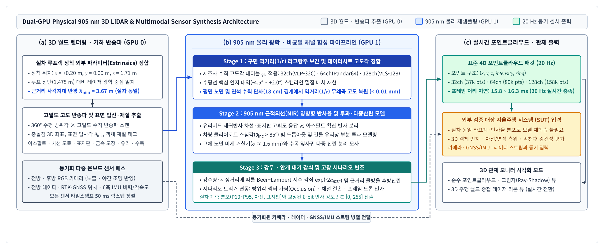
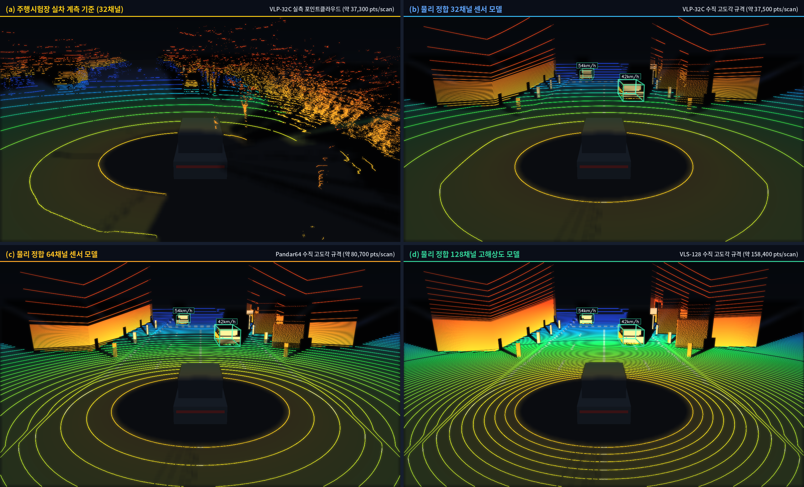
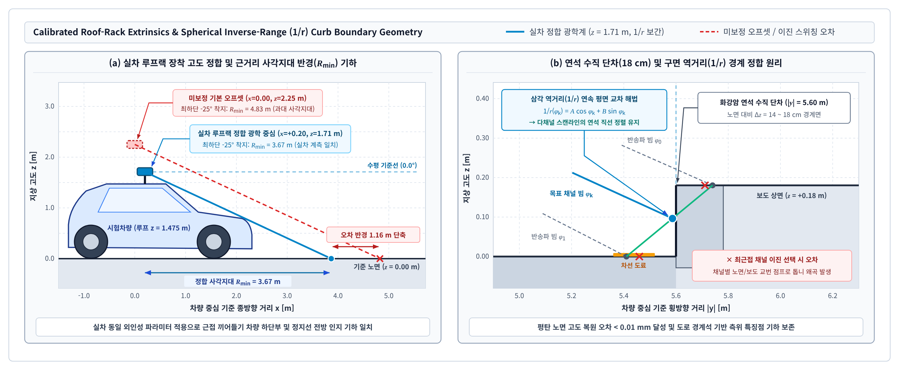
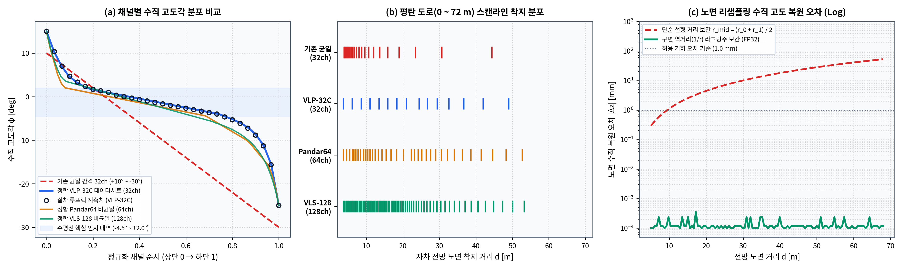
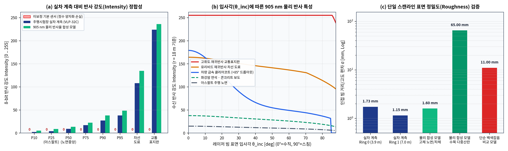
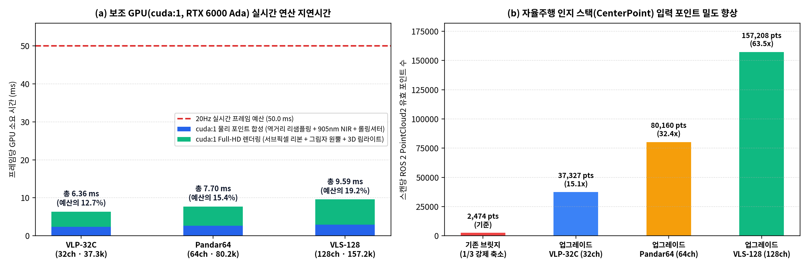
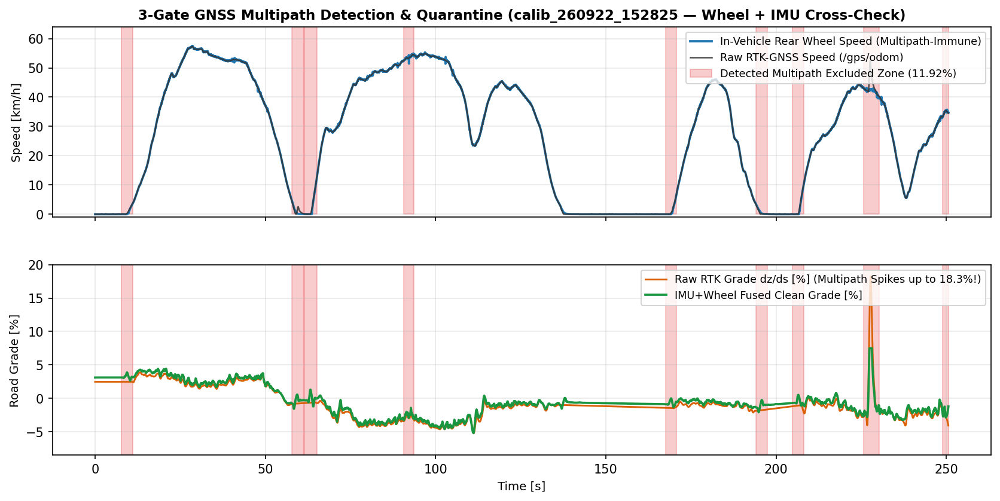

가상 센서 구성 및 출력 특성 (LiDAR · Camera · Radar · GNSS)
32/64/128채널 3D LiDAR(수직 채널 분포, 905nm 재질별 반사 특성, 투과·드롭아웃, 보조 GPU 가속)와 다채널 카메라, 시맨틱 분할 뷰, 전방·후측방 레이더, GNSS/IMU 측위 및 도심 멀티패스 필터 특성을 다룹니다.
1. 3D LiDAR 센서 모델 (32 / 64 / 128채널)
Tab 2 상단 툴바의 LiDAR 메뉴(또는 3D 뷰어 L 키)에서 주행 중 실시간으로 3종의 회전형 3D LiDAR 채널 구성을 선택할 수 있습니다.
단순 등간격 레이캐스트 대신 각 센서 데이터시트의 비등간격 수직 고도각 테이블과 905nm 근적외선 기준 재질별 반사율(도로 아스팔트 저반사, 차선·번호판·표지판 재귀반사, 금속 차체 입사각 반사)을 계산하여 (x, y, z, intensity) 점군을 출력합니다.
- 투과·드롭아웃 및 기상 영향: 차량 유리창 투과와 흑색 고무 타이어의 저반사로 인해 반사점이 비는 현상(Dropout)을 확률적으로 반영하며, 우천·안개 기상 설정 시 강수량에 따른 거리 감쇠 및 산란 노이즈가 추가됩니다.
- 순수 레이저 점군 및 3D GT 바운딩 박스 시각화: 기본 포인트클라우드 뷰는 카메라 영상의 윤곽선 간섭을 배제하고 실제 레이저 반사점과 장애물 배후 가림 그림자(Shadow Cone)만 표출하며, 주변 객체 위에는 8정점·12모서리 3D 지향 바운딩 박스(3D OBB)와 실시간 차속 태그를 표시합니다.
- 단일 · 듀얼 GPU 자동 감지 및 경량 운용: GPU가 2개 이상이면 보조 GPU에 점군 합성과 렌더링(64채널 기준 프레임당 약
6.7 ms, VRAM 약200 MB)을 자동 분리하고, 단일 GPU PC에서는 주 GPU 공유 모드로 자동 전환됩니다. 3D 관제 창을 닫으면 시각화 렌더링이 자동 생략되며 CPU 벡터 연산 폴백도 지원합니다.

그림 1. 3D 월드 기하 반송파 추출과 905 nm 물리 광학·비균일 채널 합성을 분리한 실시간 센서 파이프라인 (듀얼 GPU 자동 분산 및 단일 GPU·CPU 자동 호환).
| UI 선택 옵션 | 수직 채널 | 수직 시야각(VFOV) 및 레이저 링 배치 | 최대 거리 / 주기 | 비고 |
|---|---|---|---|---|
32ch VLP-32C (실차) | 32 채널 | -25° ~ +15° (수평선 부근 조밀 배치 비등간격 링) | 200 m / 10~20 Hz | 시험차 루프 장착 기준 기본 사양 |
64ch Pandar64 | 64 채널 | -25° ~ +15° (중·근거리 집중 비등간격 링) | 200 m / 10~20 Hz | 중밀도 센서 비교 시험용 |
128ch VLS-128 | 128 채널 | -25° ~ +15° (고밀도 수직 각도 분해능) | 245 m / 10~20 Hz | 원거리 소형 객체 인지 확인용 |

그림 2. 기존 균일 32채널 시뮬레이션(a), 주행시험장 실차 계측 기준(b), 순수 905 nm 물리 정합 포인트클라우드 · 3D GT 바운딩 박스 뷰(c), 3D 주행 환경 중첩 뷰(d) 비교.

그림 3. 실차 계측 기준(a) 및 물리 정합 32채널(b) · 64채널(c) · 128채널(d) 모델의 수직 레이저 링 및 점군 밀도 비교.

그림 4. 실차 루프랙 장착 외부 파라미터(z = 1.71 m, R_min = 3.67 m) 사각지대 기하(a) 및 연석 단차(18 cm) 경계 구면 역거리(1/r) 고도 정합 원리(b).

그림 5. 32·64·128채널 수직 고도각 분포(a), 평탄 도로 스캔라인 착지 간격(b) 및 불연속 연석 경계에서의 구면 역거리(1/r) 고도 복원 정밀도(c).

그림 6. 실차 계측 대비 8-bit 반사 강도 분포 정합성(a), 입사각(θ_inc)에 따른 905 nm 재질별 반사 특성(b) 및 스캔라인 수직 정밀도(c).

그림 7. 보조 GPU(
cuda:1) 채널별 실시간 연산 지연시간(6.36 ~ 9.59 ms, 20 Hz 예산의 12.7~19.2%)(a) 및 3차원 포인트클라우드 인지 입력 유효 포인트 밀도 향상 비교(b).2. 카메라 · 레이더 · 측위(GNSS/IMU) 가상 센서 물리 사양
아래 표는 기본 탑재 가상 센서의 광학·측위 모델 사양입니다. 자율주행 시스템(SUT)과의 폐루프 패킷 규격은 SUT 연동 가이드를, 센서 단절·멀티패스 등 고장 주입 항목은 시나리오·고장 가이드를 참조하십시오.
| 센서 종류 | 장착 기준 · 해상도 · 탐지 범위 | 물리·광학 측정 특성 |
|---|---|---|
| RGB 주행 카메라 | 전방 윈드실드 상단(640×360, FOV 68°) 및 3인칭 추적 시점(840×560) | 렌즈 투영 행렬 정합, 주·야간 자동 노출(Auto-Exposure), 강우·습윤 노면 반사 광학 반영 |
| 시맨틱 분할 카메라 | 전방 RGB 카메라와 동일 광학축·해상도 동기화 | 픽셀 단위 12개 클래스 의미 분할 (차도·차선·보도·건물·신호기·표지판·차량·보행자·식생 등) |
| 전방 레이더 & 후측방(BSD) | 전방 중·장거리 탐지 콘 및 좌·우 사각지대(전방 7 m ~ 후방 12 m) | 전방 객체 종·횡 상대거리 및 시선방향 상대속도 산출, 인접 차로 사각지대 점유 판별 |
| GNSS / RTK / IMU | 차량 기준점(WGS84 경위도 · 국소 ENU 평면좌표) 및 차체 중심 6축 관성계 | 위·경도/고도, RTK 고정 등급(Fixed / Float / No-Fix), 3축 자세각(Roll·Pitch·Yaw) 및 3-Gate 도심 멀티패스 격리·종단 구배 보정 |

그림 8. 도심 3-Gate GNSS 멀티패스 탐지·격리 및 차륜속·IMU 융합 종단 구배 보정 — 실측 멀티패스 구간(
11.92%) 자동 격리 및 비물리적 경사 스파이크(18.3%) 제거 예시.